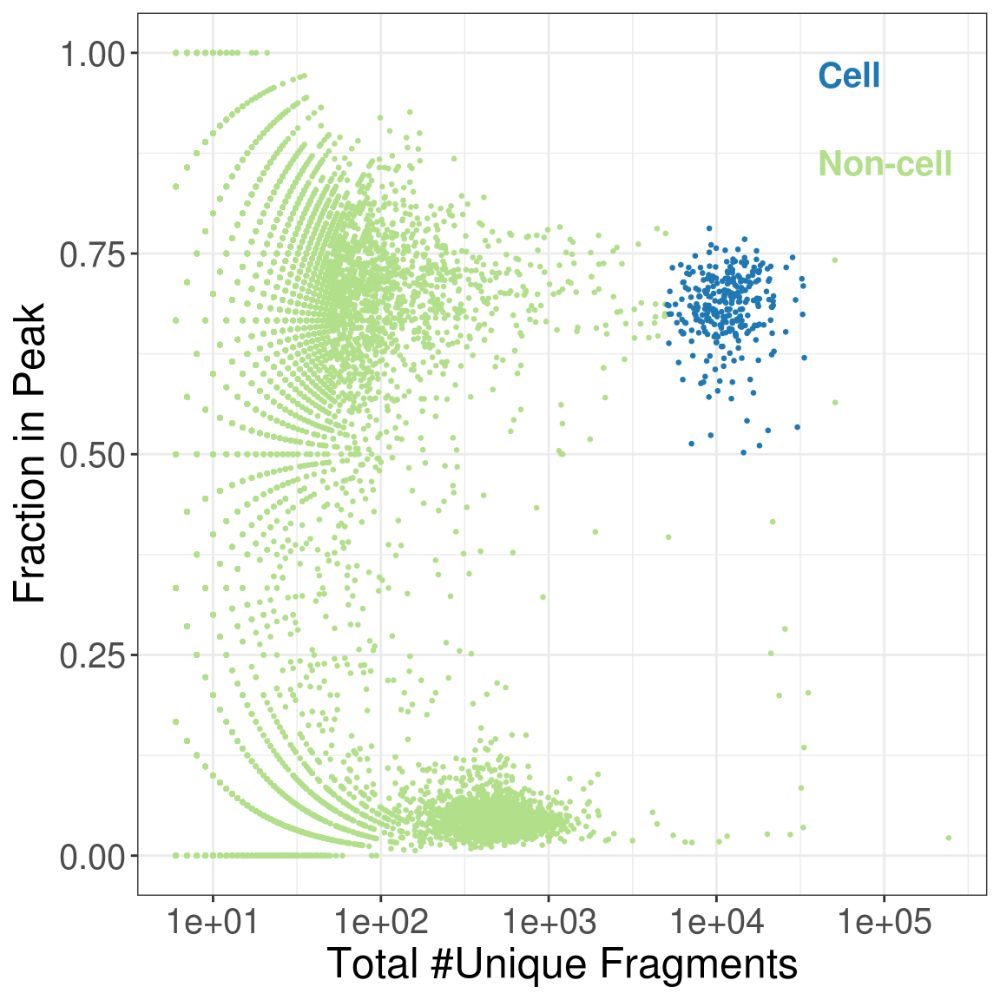
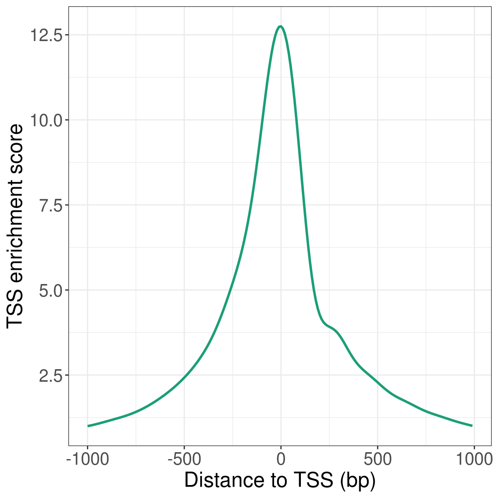
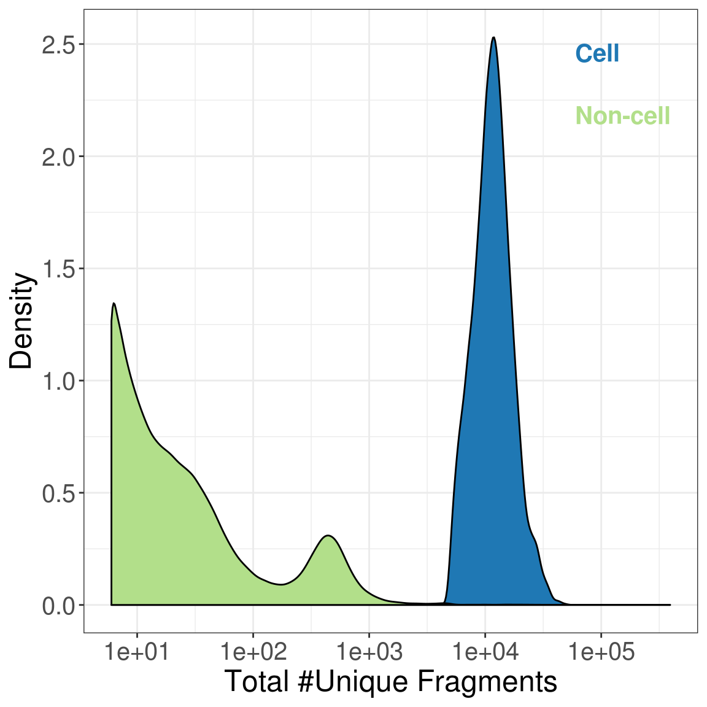
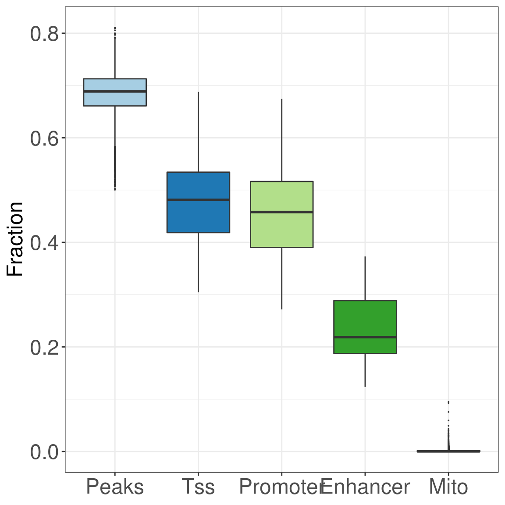

Access scATAC-pro QC results in R
1 Introduction
scATAC-pro generates raw QC metrics in plain text format. This tutorial will tell users how to replot or extract those metrics
2 Access QC results
2.1 Set up parameters, and read qc outputs
library(data.table)
library(magrittr)
library(kableExtra)
library(RColorBrewer)
library(ggplot2)
library(cicero)
library(viridis)
PEAK_CALLER = 'COMBINED'
CELL_CALLER = 'FILTER'
output_dir = '/mnt/isilon/tan_lab/yuw1/run_scATAC-pro/PBMC10k/output/'
qc_dir = paste0(output_dir, 'summary/')
configure_user_file = '/mnt/isilon/tan_lab/yuw1/run_scATAC-pro/PBMC10k/configure_user.txt'
read_conf_file <- function(configure_user_file){
system(paste0('grep = ', configure_user_file, " | grep -v ^# | awk -F= '{print $1}' | awk '{$1=$1;print}' > /tmp/vrs.txt"))
system(paste0('grep = ', configure_user_file, " | grep -v ^# | awk -F= '{print $2}' | awk -F# '{print $1}' | awk '{$1=$1;print}' > /tmp/vls.txt"))
vrs = readLines('/tmp/vrs.txt')
vls = readLines('/tmp/vls.txt')
for(i in 1:length(vrs)){
assign(vrs[i], vls[i], envir = .GlobalEnv)
}
}
## read configure_users.txt file
read_conf_file(configure_user_file)
## read mapping stats
mapping_qc_file = paste0(qc_dir, OUTPUT_PREFIX, '.MappingStats')
mapping_qc = fread(mapping_qc_file, header = F)
## read fragments.txt file
fragments_file = paste0(qc_dir, OUTPUT_PREFIX, '.fragments.txt')
frags = fread(fragments_file)
names(frags) = c('chr', 'start', 'end', 'bc', 'ndup')
## read mapping stats for cell barcodes
cell_mapping_qc_file = paste0(qc_dir, 'cell_barcodes.MappingStats')
cell_mapping_qc = fread(cell_mapping_qc_file, header = F)
## read qc per barcode file
bc_stat_file = paste0(qc_dir, OUTPUT_PREFIX, '.', PEAK_CALLER, '.qc_per_barcode.txt')
bc_stat = fread(bc_stat_file)
## read cell barcodes
cell_barcodes = fread(paste0(output_dir, '/filtered_matrix/', PEAK_CALLER, '/', CELL_CALLER, '/barcodes.txt'), header = F)$V12.2 Access mapping QC for all aggregated data (including non-cell barcodes)
lib_complx = nrow(frags)/sum(frags$ndup)
lib_complx = paste0(100 * round(lib_complx, 3), '%')
mapping_qc$frac = round(mapping_qc$V2/mapping_qc$V2[1], 3)
mapping_qc$frac = paste0(100*mapping_qc$frac, '%')
mapping_qc = rbind(mapping_qc, data.frame(V1 ='Library Complexity (nonredudant fraction)', V2 = '', frac = lib_complx))
kable(mapping_qc, col.names = NULL, format = 'html', caption = paste('Sample:', OUTPUT_PREFIX)) %>%
kable_styling("striped", full_width = F, position = 'left', font_size = 15)| Total_Pairs | 234252877 | 100% |
| Total_Pairs_Mapped | 232469423 | 99.2% |
| Total_Uniq_Mapped | 220128641 | 94% |
| Total_Mito_Mapped | 498673 | 0.2% |
| Total_Dups | 98905770 | 42.2% |
| Total_Pairs_MAPQ30 | 215331878 | 91.9% |
| Total_Mito_MAPQ30 | 397362 | 0.2% |
| Total_Dups_MAPQ30 | 94300385 | 40.3% |
| Library Complexity (nonredudant fraction) | 59.8% |
2.3 Access QC for cell barcodes
qc_sele = bc_stat[bc %in% cell_barcodes, ]
qc_nonsele = bc_stat[!bc %in% cell_barcodes, ]
ncells = length(cell_barcodes)
mapq30.frac.in.cell = paste0(round(sum(frags[bc %in% cell_barcodes]$ndup)/sum(frags$ndup), 3) * 100, '%')
frac.in.cell = paste0(round(cell_mapping_qc$V2[2]/as.integer(as.character(mapping_qc$V2[2])), 3) * 100, '%')
med.frag.per.cell = round(median(qc_sele$total_frags))
frac.uniq = paste0(round(nrow(frags[bc %in% cell_barcodes])/sum(frags[bc %in% cell_barcodes]$ndup), 3) * 100, '%')
cell.table = data.frame(c(CELL_CALLER, paste0(ncells), paste0(med.frag.per.cell), frac.in.cell, mapq30.frac.in.cell))
rownames(cell.table) = c('Cell called by', 'Estimated # of cells', 'Median fragments per cell', 'Fraction of Mapped reads in cells', 'Fraction of MAPQ30 in cells')
kable(cell.table, row.names = T, col.names = NULL, format = 'html') %>%
kable_styling("striped", full_width = F, position = 'left', font_size = 15)| Cell called by | FILTER |
| Estimated # of cells | 6783 |
| Median fragments per cell | 11537 |
| Fraction of Mapped reads in cells | 65.1% |
| Fraction of MAPQ30 in cells | 65.5% |
2.4 Mapping QC for aggregated cell barcodes
if(CELL_MAP_QC){
lib_complx = frac.uniq
cell_mapping_qc$frac = round(cell_mapping_qc$V2/cell_mapping_qc$V2[1], 3)
cell_mapping_qc$frac = paste0(100*cell_mapping_qc$frac, '%')
cell_mapping_qc = rbind(cell_mapping_qc, data.frame(V1 ='Library Complexity (nonredudant fraction)', V2 = '', frac = lib_complx))
kable(cell_mapping_qc, col.names = NULL, format = 'html') %>%
kable_styling("striped", full_width = F, position = 'left', font_size = 15)
}| Total_Pairs | 152047101 | 100% |
| Total_Pairs_Mapped | 151349982 | 99.5% |
| Total_Uniq_Mapped | 145500980 | 95.7% |
| Total_Mito_Mapped | 236221 | 0.2% |
| Total_Dups | 72415524 | 47.6% |
| Total_Pairs_MAPQ30 | 143362255 | 94.3% |
| Total_Mito_MAPQ30 | 189280 | 0.1% |
| Total_Dups_MAPQ30 | 69898188 | 46% |
| Library Complexity (nonredudant fraction) | 55.2% |
2.5 Access QC for single cells
A few plots and metrics for single cells
2.5.1 Total fragments VS fraction in peaks
bc_stat[, 'group' := ifelse(bc %in% cell_barcodes, 'cell', 'non-cell')]
library(ggplot2)
library(grid)
nsub_frags = min(15000, nrow(bc_stat)) ## downsample for scatter plot
bc_stat_down = bc_stat[sort(sample(1:nrow(bc_stat), nsub_frags)), ]
g <- ggplot(data = bc_stat_down,
aes(x = total_frags, y = frac_peak, col = group)) +
geom_point(size = 0.5) + scale_x_continuous(trans='log10') + theme_bw() +
theme(legend.position = 'none',
legend.title=element_blank(),
axis.text = element_text(size = 15, family = "Helvetica"),
axis.title = element_text(size = 18, family = "Helvetica")) +
xlab('Total #Unique Fragments') + ylab('Fraction in Peak')
text1 <- grobTree(textGrob("Cell", x=0.8, y=0.93, hjust=0,
gp=gpar(col='#1F78B4', fontsize=15, fontface = 'bold', fontfamily = "Helvetica")))
text2 <- grobTree(textGrob("Non-cell", x=0.8, y=0.83, hjust=0,
gp=gpar(col='#B2DF8A', fontsize=15, fontface = 'bold', fontfamily = "Helvetica")))
g + annotation_custom(text1) + annotation_custom(text2)+
scale_color_manual(values = c('#1F78B4', '#B2DF8A'))
2.5.2 Distribution of Insert Size
frags[, 'isize' := end - start]
frags = frags[sort(sample(1:nrow(frags), 1000000)), ]
ggplot(data = frags[isize < 800], aes(x = isize)) +
geom_density(fill = 'lightblue') + xlab('Insert Size') + ylab('Density') + theme_bw() + theme(legend.title=element_blank(),
legend.background = NULL,
axis.text = element_text(size = 15, family = "Helvetica"),
axis.title = element_text(size = 18, family = "Helvetica")) 
2.5.3 TSS enrichment score profile
## read tss enrichement matrix
tss_escore_file = paste0(output_dir, '/signal/cell_barcodes.MAPQ30.aggregated.mtx.gz')
if(!file.exists(tss_escore_file)) tss_escore_file = paste0(output_dir, '/signal/', OUTPUT_PREFIX, '.aggregated.mtx.gz')
set.cols = brewer.pal(n=5, name = 'Dark2')
tss.mat = fread(tss_escore_file)
tss.mat = tss.mat[, -c(1:6)]
tss.mat[is.na(tss.mat)] = 0
tss.escore = colSums(tss.mat)
ma <- function(x, n = 10){stats::filter(x, rep(1 / n, n), sides = 2)}
tss.escore = ma(tss.escore)
tss.escore = tss.escore[14:213]
df = data.table(index = 10*(-100:99), escore = tss.escore/tss.escore[1])
ggplot(data = df, aes(x = index, y = escore)) + geom_line(size = 1, col = set.cols[1]) + theme_bw() +
xlab('Distance to TSS (bp)') + ylab('TSS enrichment score') + theme(legend.title=element_blank(),
axis.text = element_text(size = 15, family = "Helvetica"),
axis.title = element_text(size = 18, family = "Helvetica")) 
2.5.3.1 Density plot of total number of unique fragments
bc_stat[, 'group' := ifelse(bc %in% cell_barcodes, 'cell', 'non-cell')]
p <- ggplot(data = bc_stat, aes(x = total_frags, fill = group)) +
geom_density() + scale_x_continuous(trans = 'log10') + theme_bw() +
theme(legend.position='none', legend.title=element_blank(),
axis.title = element_text(size = 18, family = "Helvetica"),
axis.text = element_text(size = 15, family = "Helvetica")) +
xlab('Total #Unique Fragments') + ylab('Density')
text1 <- grobTree(textGrob("Cell", x=0.8, y=0.93, hjust=0,
gp=gpar(col='#1F78B4', fontsize=15, fontface = 'bold', fontfamily = "Helvetica")))
text2 <- grobTree(textGrob("Non-cell", x=0.8, y=0.83, hjust=0,
gp=gpar(col='#B2DF8A', fontsize=15, fontface = 'bold', fontfamily = "Helvetica")))
p + annotation_custom(text1) + annotation_custom(text2) +
scale_fill_manual(values = c('#1F78B4', '#B2DF8A'))
2.5.3.2 Overlapping with sequence annotated regions
qc_sele_df = data.table(frac = c(qc_sele$frac_peak, qc_sele$frac_tss, qc_sele$frac_promoter, qc_sele$frac_enh, qc_sele$frac_mito), 'type' = rep(c('Peaks', 'Tss', 'Promoter', 'Enhancer', 'Mito'), each = nrow(qc_sele)))
qc_sele_df$type = factor(qc_sele_df$type, levels = c('Peaks', 'Tss', 'Promoter', 'Enhancer', 'Mito'))
ggplot(data = qc_sele_df, aes(y = frac, x = type, fill = type)) + ylab('Fraction') + theme_bw() +
geom_boxplot(outlier.size = 0.01, show.legend = FALSE) +
scale_fill_manual(values = brewer.pal(5, 'Paired')) +
theme(legend.position = 'none',
axis.text = element_text(size = 18, family = "Helvetica"),
axis.title.x = element_blank(),
axis.title.y = element_text(size = 18, family = "Helvetica")) + xlab('') 
2.5.3.3 Overall statistics
frac_peak = sum(qc_sele$total_frags * qc_sele$frac_peak)/sum(qc_sele$total_frags)
frac_mito = sum(qc_sele$total_frags * qc_sele$frac_mito)/sum(qc_sele$total_frags)
frac_promoter = sum(qc_sele$total_frags * qc_sele$frac_promoter)/sum(qc_sele$total_frags)
frac_enh = sum(qc_sele$total_frags * qc_sele$frac_enhancer)/sum(qc_sele$total_frags)
frac_tss = sum(qc_sele$total_frags * qc_sele$frac_tss)/sum(qc_sele$total_frags)
fracs = data.frame(c(frac_peak, frac_promoter, frac_enh, frac_tss))
row.names(fracs) = c('Fraction in peaks',
'Fraction in promoters', 'Fraction in Enhancers(ENCODE)',
'Fraction in TSS')
colnames(fracs) = 'pr'
fracs$pr = round(fracs$pr, 3)
fracs$pr = paste0(100*fracs$pr, '%')
kable(fracs, row.names = T, col.names = NULL) %>%
kable_styling(full_width = F, position = 'left', font_size = 15)| Fraction in peaks | 68.4% |
| Fraction in promoters | 45.5% |
| Fraction in Enhancers(ENCODE) | 23.7% |
| Fraction in TSS | 47.8% |